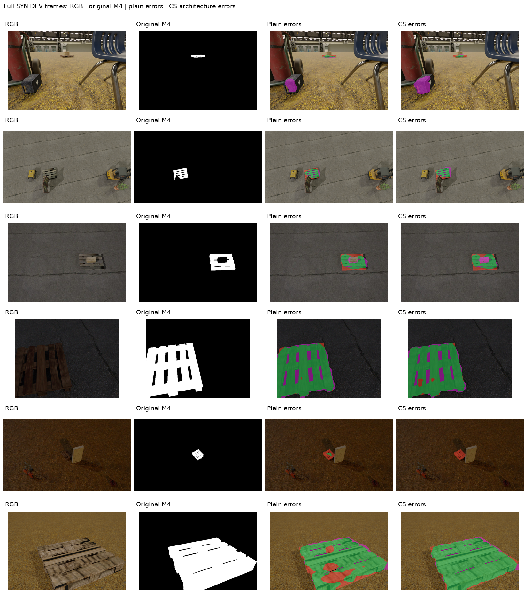
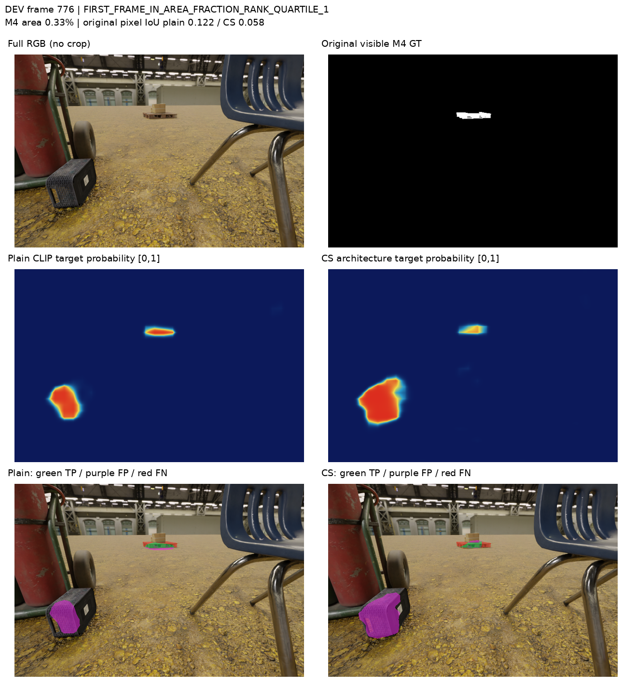
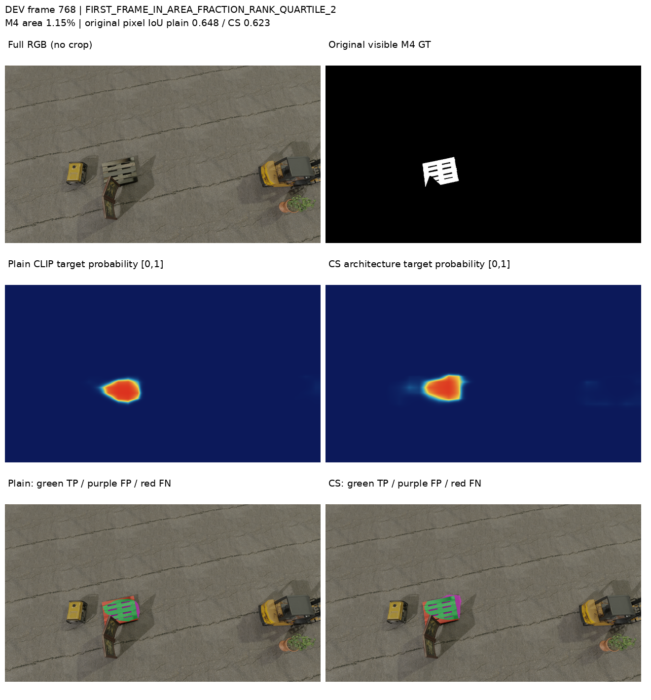
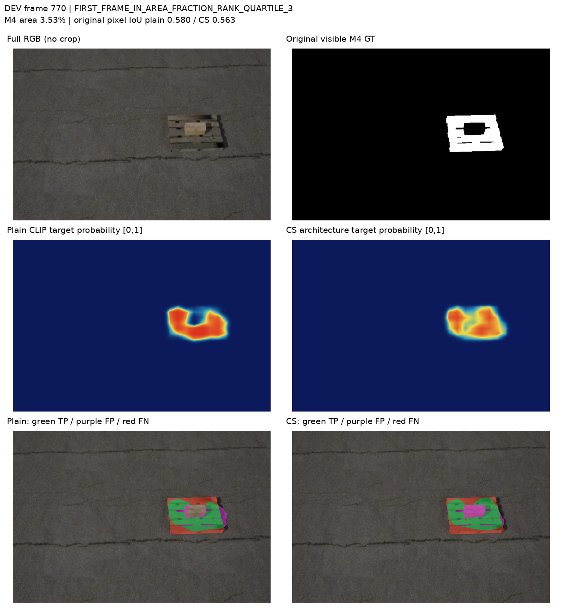
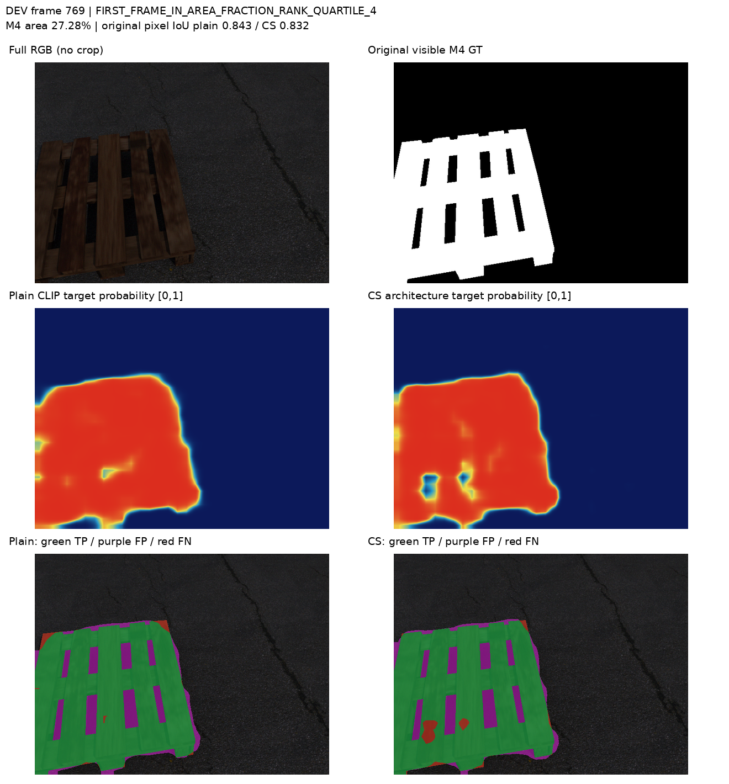
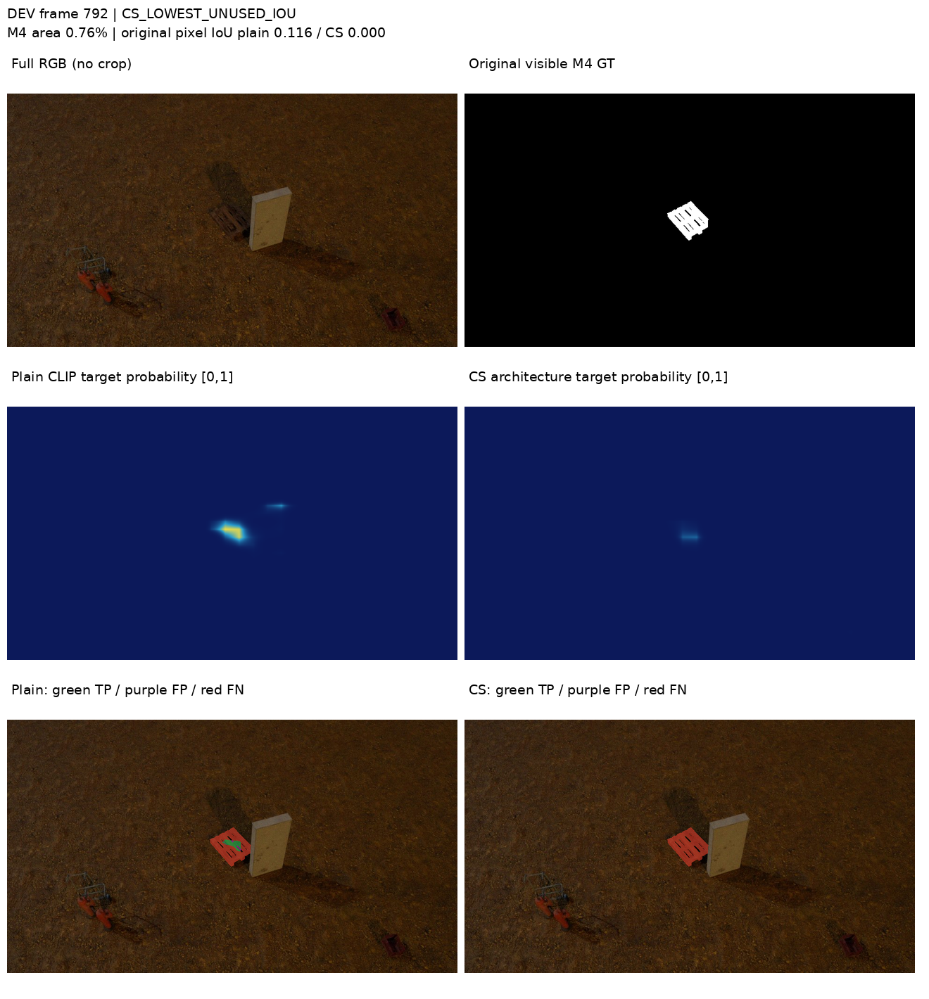
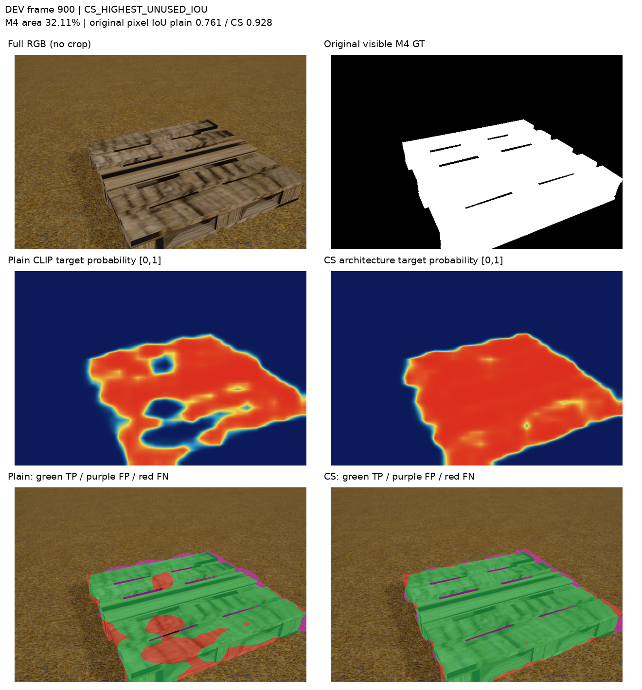

예측32×32 logit을 원래 영상 크기로 bilinear 복원하고 logit≥0으로 이진화했습니다. 원래 M4의 uint8>127 정답과 비교합니다. 키포인트 crop·재학습·문턱 선택은 없습니다.
| 방식 | 원해상도 micro IoU% | micro Dice% | 평균 영상 IoU% |
|---|---|---|---|
| PLAIN_CLIP | 66.02 | 79.53 | 56.06 |
| CLIP_SURGERY_ARCH | 65.29 | 79.00 | 57.40 |
확률 색상은 모든 영상에서 고정0…1입니다. 초록=TP, 보라=FP, 빨강=FN. 그림은 전체 영상을 비율을 유지해 표시합니다. 6개 사례는 RGB를 읽기 전에 면적 사분위와 IoU 규칙으로 고정했습니다. 전체235장 지표가 성능 근거입니다.
지표 JSON·32격자 대비 · 235장 두 방식 표 · 원래 query의 M4 존재 평가 · 사례 선택 기록
Query 평가는 대상 픽셀 존재/비존재이며 native 보임/외부 가림 정답이 아닙니다. 비대상에는 바닥·구멍·다른 물체·초기 좌표 오류가 함께 포함됩니다.






